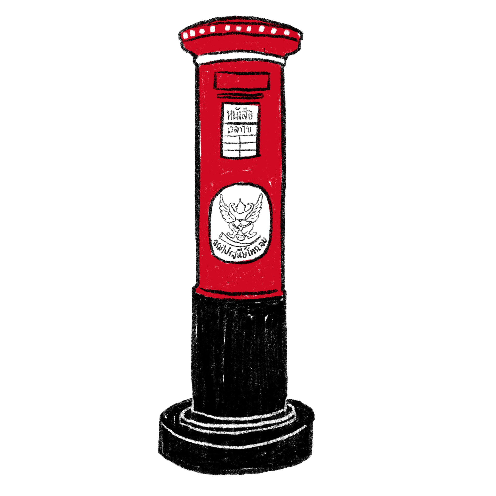
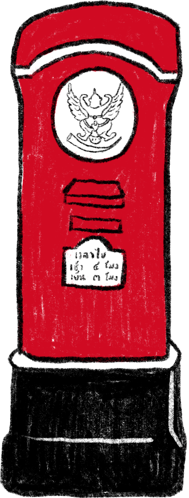
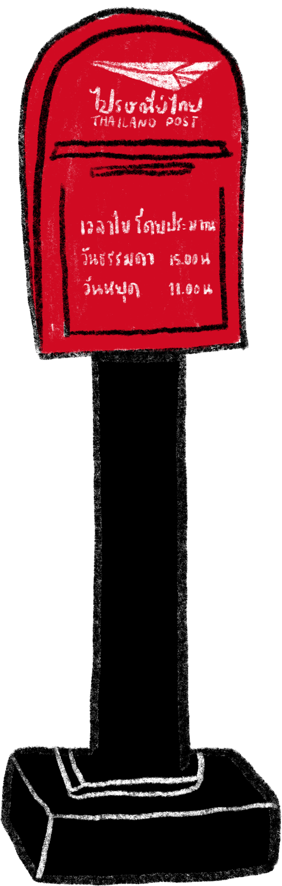

Timeline
พัฒนาการของตู้ไปรษณีย์
สัญลักษณ์อย่างหนึ่งที่คนจะนึกถึงเป็นอันดับแรก ๆ ก็คือ ตู้ไปรษณีย์สีแดง ซึ่งอยู่คู่กับการไปรษณีย์ใน เมืองไทยมาตั้งแต่แรกเริ่ม ไปรษณีย์ไทยมีตู้ไปรษณีย์ หรือ “ตู้แดง” ออกมาแล้ว 10 รุ่น ดังนี้
สัญลักษณ์อย่างหนึ่งที่คนจะนึกถึงเป็นอันดับแรก ๆ ก็คือ ตู้ไปรษณีย์สีแดง ซึ่งอยู่คู่กับการไปรษณีย์ใน เมืองไทยมาตั้งแต่แรกเริ่ม ไปรษณีย์ไทยมีตู้ไปรษณีย์ หรือ “ตู้แดง” ออกมาแล้ว 10 รุ่น ดังนี้
ตู้ทิ้งหนังสือที่เก่าแก่ที่สุดของไทย
กรมไปรษณีย์สยามได้รับมอบเป็นของขวัญจาก
ประเทศเยอรมนีในโอกาสที่เปิดบริการไปรษณีย์

มีลักษณะเป็นแท่งกลม และเป็นโลหะหล่อทั้งชิ้น ซึ่งตู้ไปรษณีย์ ลักษณะดังกล่าวนี้สั่ง ทำมาจากต่างประเทศ โดยรุ่นแรกสั่งทำ จากประเทศอังกฤษในช่วงปลายรัชสมัยรัชกาลที่ 5 และรุ่นต่อมาช่วงต้นรัชสมัยรัชกาลที่ 6 สั่งทำจากประเทศสิงคโปร์
ตู้ไปรษณีย์สมัยรัชกาลที่ 7 ผลิตขึ้นใช้เองในประเทศ หล่อด้วยซีเมนต์หนาประมาณ 20 เซนติเมตร
อดีตตู้ไปรษณีย์ที่ใหญ่ที่สุดของไทย
(ซึ่งอดีตก็เคยเป็นที่สุดในโลก)
ตั้งอยู่บริเวณสี่แยกหอนาฬิกาในอำเภอ
เบตง จังหวัดยะลา มีส่วนฐานและส่วนตู้
ฐานมีความสูง 1.30 เมตร เส้นรอบวง 1.60
เมตร ส่วนตู้สูง 2.90 เมตร เส้นรอบวง 1.40
เมตร สร้างขึ้นเมื่อปี พ.ศ. 2467
ตู้ไปรษณีย์สมัยรัชกาลที่ 8
ตู้หล่อซีเมนต์โดยใช้รูปทรงและขนาดเดียวกับตู้ใน
สมัยรัชกาลที่7แต่แตกต่างกันเล็กน้อยตรงบริเวณ
ส่วนบนของตู้ และตราครุฑ ที่ปีกจะกาง เหยียดตรง
ตู้ไปรษณีย์สมัยรัชกาลที่ 9
ตู้หล่อซีเมนต์ทรงกรงนกมีขนาดเล็กและเสาสูง
ใช้ในพื้นที่ที่มีปริมาณงานน้อยในส่วนภูมิภาค
สร้างขึ้นเพื่อใช้งานในสมัยต้นรัชกาลที่ 9
ตู้ไปรษณีย์แบบ ข. ตู้ทรงสี่เหลี่ยมผืนผ้าแนวตั้ง
ทำด้วยโลหะแผ่น ลักษณะเดียวกับตู้ไปรษณีย์แบบ ก.
ตู้ไปรษณีย์แบบ ก. ตู้ทรงสี่เหลี่ยมขนาดใหญ่
ทำด้วยโลหะแผ่นขึ้นรูปฐานเป็นซีเมนต์หนา
ตู้ไปรษณีย์แบบ ค. ตู้โลหะขนาดเล็ก มีเสาสูงส่วนบนของตู้ จะมีลักษณะโค้งมนตั้งบนฐานซีเมนต์หล่ออย่างหนา ใช้งานในพื้นที่ที่มีจำนวนไปรษณียภัณฑ์น้อยในภูมิภาค
ตู้ไปรษณีย์แบบ ก. ทรงเหมือนกันกับตู้แบบ ก.
ที่เริ่มใช้ในปี พ.ศ. 2516 แตกต่างกันที่รายละเอียด
ข้อความและตราสัญลักษณ์
แสตมป์ชุดงานแสดงตราไปรษณียากรแห่งชาติ 2532
หรือสแตมป์ชุดที่รวมรูปตู้ไปรษณีย์ในไทย
ถูกวางจำหน่ายวันที่ 4 สิงหาคม 2532 เป็นวันแรก
พิมพ์ที่ Harrison & Sons (High Wycombe) Ltd., England